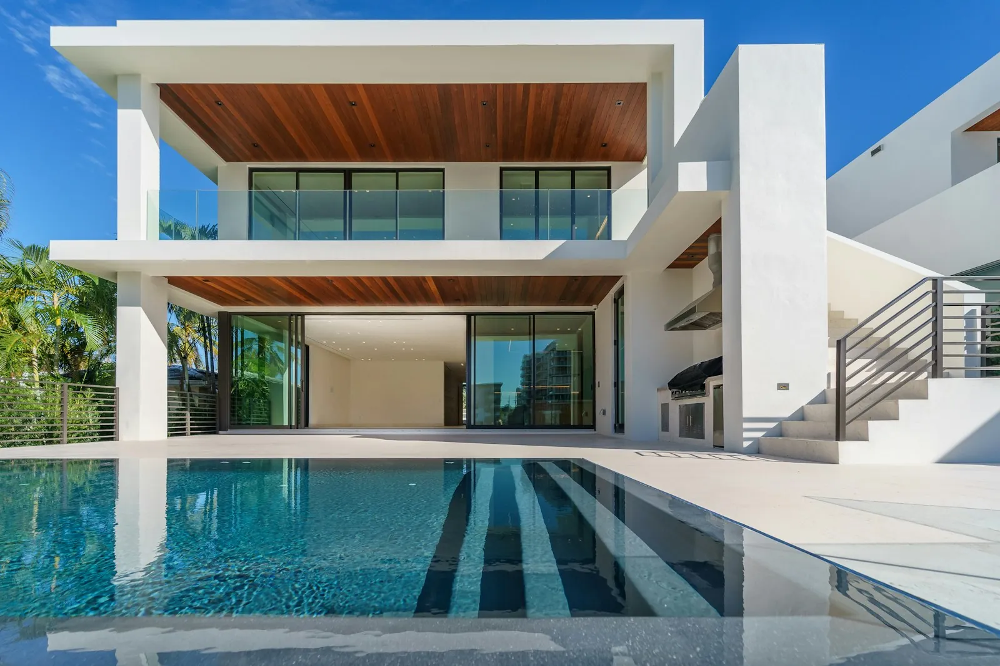
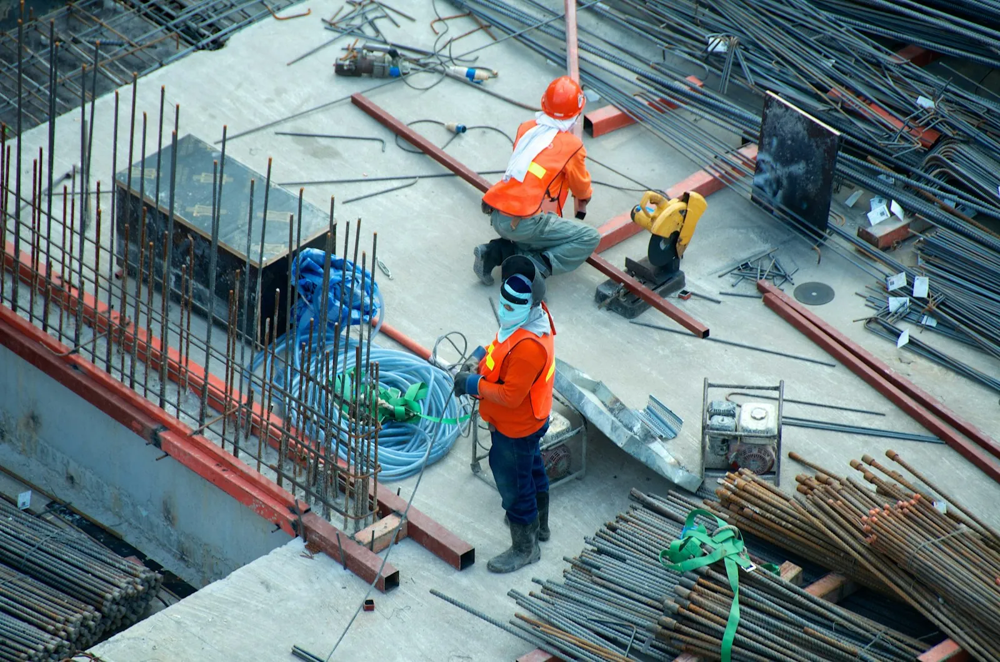
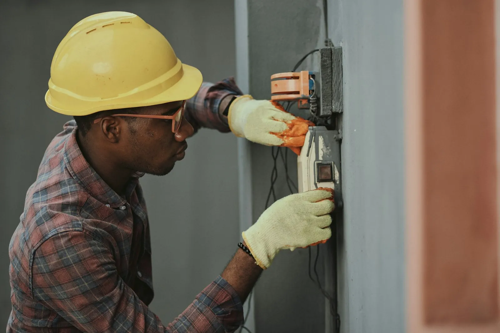

Projektim dhe leje
Projekt arkitektonik, dokumentacion dhe marrja e lejeve të ndërtimit.
Shërbimet
Çdo fazë e ndërtimit, nën një çati.

Projekt arkitektonik, dokumentacion dhe marrja e lejeve të ndërtimit.

Themelet, skeleti i betonit dhe muret – ndërtim i fortë dhe i saktë.

Çati të sheshta ose me pjerrësi, me izolim dhe hidroizolim cilësor.

Fasada, suvatimi, dyshemetë, instalimet dhe detajet e brendshme.

Kontakt / Ofertë
Na tregoni për planin tuaj dhe ju dërgojmë një ofertë falas.